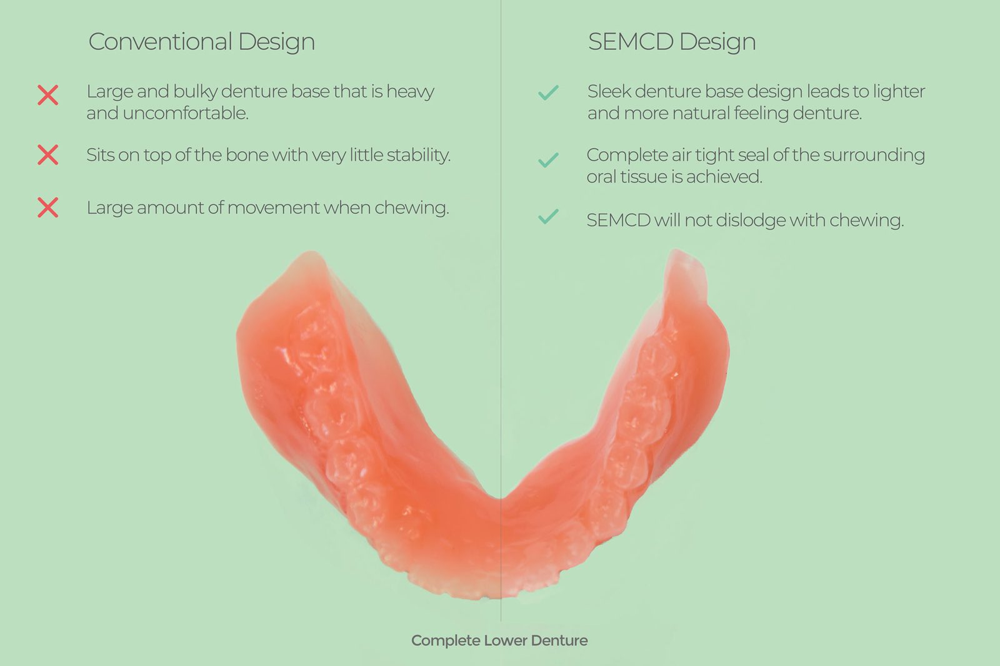
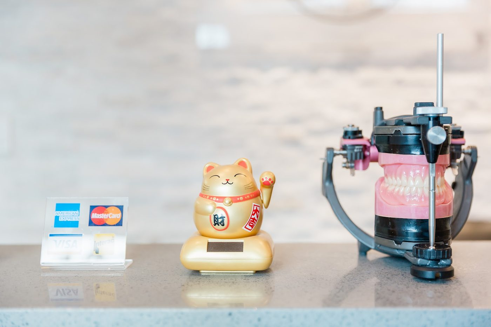

Home / Lower suction dentures
SEMCD · Suction Effective Mandibular Complete Denture
A lower denture that stays put.
Loose lower dentures pop out, rub and cause sore spots. SEMCD gives a lower denture the suction an upper denture has, with no surgery, implants or adhesives.

How it's made
A different impression, start to finish
SEMCD was developed by Dr. Jiro Abe of Japan. It starts with a closed-mouth impression: you take part with a few simple mouth movements while the highest-quality impression material captures the tissues around your lower ridge.
It uses all the materials, techniques and equipment of a BPS denture, plus Dr. Abe's design. Henry Sen learned the technique under Dr. Abe's direct tutelage and brought it to King & Knight.
Questions
About suction dentures
Does it work for everyone?
It works for about 4 out of 5 patients. If suction can't be achieved, you still get a better denture than a standard one, thanks to its more compact design and top-of-the-line materials.
Is surgery required?
No. SEMCD needs no surgery, implants or adhesives.
Is this better than a BPS denture?
SEMCD is the next step from BPS. It uses the same materials, techniques and equipment, plus Dr. Abe's design and impression method.
How do I find out if it's right for me?
Call 604-282-9817 to book a consultation. Henry will look at your lower ridge and tell you what to expect.
Visit
103 – 1435 Kingsway
Vancouver, BC V5N 2R6
- Mon–Fri
- 10:00 am – 5:00 pm
- Saturday
- By appointment
- Sunday
- Closed
